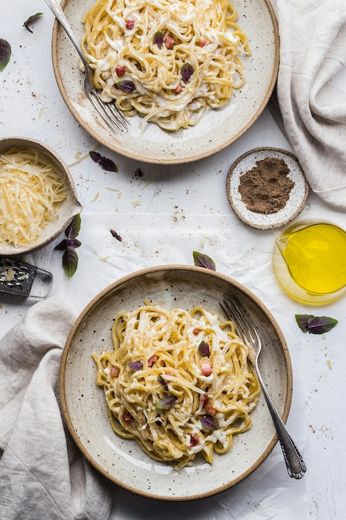

Pasta al Limone

A zesty lemon-cream pasta recipe for ultimate comfort.
Ingredients
- 5 tablespoons of unsalted butter
- Finely grated zest of 1 lemon, plus the juice
- 1 pound fresh spaghetti
- Kosher salt
- 1 ounce freshly grated parmesan or Parmigiano-Reggiano
- Freshly ground black pepper
Steps
- In a large skillet, melt the butter, then add the zest, stirring constantly for one to two minutes.
- Meanwhile, in a large pot of heavily salted boiling water, cook the pasta until al dente. Drain, reserving 1 cup of the cooking water.
- Add the pasta to the butter mixture, then add in 1/2 cup of the water. Increase the heat to medium-high and toss with tongs.
- Add grated cheese and continue to toss until the sauce emulsifies and cheese melts. Add the lemon juice, salt and pepper to taste, and top with remaining cheese. Enjoy!